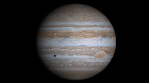

Júpiter e Urano
Prof: Marcelo Vieira dos Santos
Prof: Marcelo Vieira dos Santos
Júpiter e Urano
Júpiter é o maior planeta do Sistema Solar, tanto em diâmetro quanto em massa, e é o quinto
mais próximo do Sol. Possui menos de um milésimo da massa solar, contudo tem 2,5 vezes a
massa de todos os outros planetas em conjunto.
1
Prof: Marcelo Vieira dos Santos
Júpiter e Urano
Júpiter é composto principalmente de Hélio, Metano, Amônia, Fósforo e Vapor de água sendo
71% de hidrogênio, 24% de hélio e 5% dos outros
Gravidade: 24,79 m/s²
Raio: 69.911 km
Temperatura média: 165 K / -108 ºC
Dia 9h 56m
Ano 4.332 dias, 11,86 anos Terras
2
Prof: Marcelo Vieira dos Santos
Júpiter e Urano

3
Prof: Marcelo Vieira dos Santos
Júpiter e Urano
79 Satelites Naturais
Io
Europa
Ganimedes
Calisto
4
Prof: Marcelo Vieira dos Santos
Júpiter e Urano
Urano é o sétimo planeta a partir do Sol, o terceiro maior
e o quarto mais massivo dos oito planetas do Sistema Solar.
5
Prof: Marcelo Vieira dos Santos
Júpiter e Urano
Urano
Temperatura média:-220ºC
Gravidade 8,87 m/s²
Dia 17h 14m
Ano 30.681 dias, 84,05 anos Terras
27 luas em Urano
luas: Miranda, Ariel, Umbriel, Titânia e Oberon.
6
Prof: Marcelo Vieira dos Santos
Júpiter e Urano
Composição
Hidrogênio (H2)
Hélio
Metano
Gelos:
Amônia
Água
Hidrossulfeto de amônio (NH4SH)
Metano
7
Prof: Marcelo Vieira dos Santos
Júpiter e Urano
8
Prof: Marcelo Vieira dos Santos